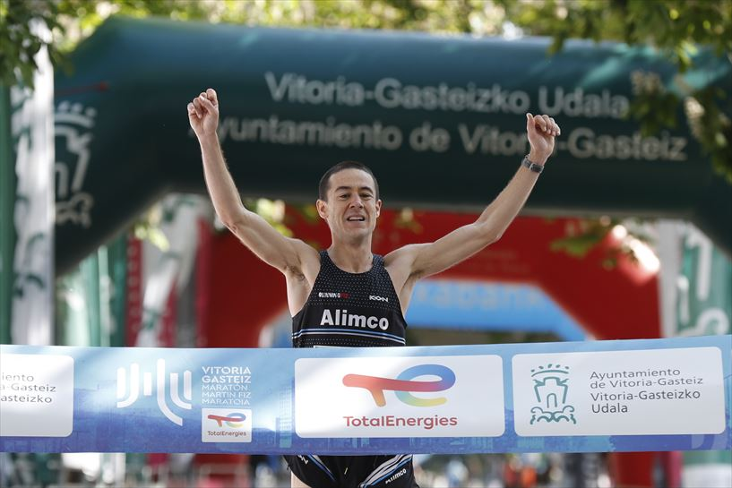

<!-- Carousel -->
<div class="d-flex justify-content-center container-carousel">
    <div id="destacados" class="carousel slide" data-bs-ride="carousel" style="width: 75%;">
        <!-- Indicators/dots -->
        <div class="carousel-indicators">
            <button type="button" data-bs-target="#destacados" data-bs-slide-to="0" class="active"></button>
            <button type="button" data-bs-target="#destacados" data-bs-slide-to="1"></button>
            <button type="button" data-bs-target="#destacados" data-bs-slide-to="2"></button>
        </div>
        <!-- The slideshow/carousel -->
        <div class="carousel-inner rounded">
            <div class="carousel-item active">
                
                <div class="carousel-caption">
                    <h2>VITORIA-GASTEIZ</h2>
                    <p>Disfruta de la esperada </p>
                </div>
            </div>
            <div class="carousel-item">
                
                <div class="carousel-caption">
                    <h2>MADRID</h2>
                    <p>Siente Madrid!!!</p>
                </div>
            </div>
            <div class="carousel-item">
                
                <div class="carousel-caption">
                    <h2>VALENCIA</h2>
                    <p>Ven a superarte en este increible circuito de 18km...</p>
                </div>
            </div>
        </div>

        <!-- Left and right controls/icons -->
        <button class="carousel-control-prev" type="button" data-bs-target="#destacados" data-bs-slide="prev">
            <span class="carousel-control-prev-icon bg-black"></span>
        </button>
        <button class="carousel-control-next" type="button" data-bs-target="#destacados" data-bs-slide="next">
            <span class="carousel-control-next-icon bg-black"></span>
        </button>
    </div>
</div>